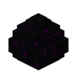

<!DOCTYPE html>
<html lang="en">
<head>
    <meta charset="UTF-8">
    <meta name="viewport" content="width=device-width, initial-scale=1.0">
    <title>PaceMan Stats</title>
    <style>
        @font-face {
            font-family: 'Minecraft';
            src: url('fonts/Minecraftia.ttf') format('truetype'); /* Adjust path as needed */
        }
        body {
            font-family: 'Minecraft', sans-serif;
        }
        .stat-item {
            display: flex;
            align-items: center;
            color: white;
            margin: -20px 0;
        }
        .stat-item img {
            width: 30px; 
            height: 30px; 
            margin-right: 8px; 
        }
    </style>
</head>
<body>
    <div id="stats"></div>

    <script>
        function msToReadableTime(ms) {
            const totalSeconds = Math.floor(ms / 1000);
            const minutes = Math.floor(totalSeconds / 60);
            const seconds = (totalSeconds % 60).toString().padStart(2, '0');
            const milliseconds = Math.floor((ms % 1000) / 10).toString().padStart(2, '0'); 
            return `${minutes}:${seconds}.${milliseconds}`;
        }
    async function fetchStats() {
        try {
            const response = await fetch('/api');
            const data = await response.json();
            console.log(data); // Log the data for inspection

            if (data.recentRun && data.worldStats) {
                const recentRun = data.recentRun;
                const worldStats = data.worldStats;

                // Display recent run stats
                document.getElementById('stats').innerHTML = `
                    <div class="stat-item">
                        
                        <p>${recentRun.nether > 0 ? msToReadableTime(recentRun.nether) : ''} 
                            <span style="color: ${((recentRun.nether - worldStats.nether) < 0) ? 'green' : 'red'};">
                            (${recentRun.nether > 0 ? (recentRun.nether - worldStats.nether >= 0 ? '+' : '-') + msToReadableTime(Math.abs(recentRun.nether - worldStats.nether)) : ''})</span>
                        </p>
                    </div>
                    
                    <div class="stat-item">
                        
                        <p>${recentRun.bastion > 0 ? msToReadableTime(recentRun.bastion) : ''} 
                            <span style="color: ${((recentRun.bastion - worldStats.bastion) < 0) ? 'green' : 'red'};">
                            (${recentRun.bastion > 0 ? (recentRun.bastion - worldStats.bastion >= 0 ? '+' : '-') + msToReadableTime(Math.abs(recentRun.bastion - worldStats.bastion)) : ''})</span>
                        </p>
                    </div>
                    <div class="stat-item">
                        
                        <p>${recentRun.fortress > 0 ? msToReadableTime(recentRun.fortress) : ''} 
                            <span style="color: ${((recentRun.fortress - worldStats.fortress) < 0) ? 'green' : 'red'};">
                            (${recentRun.fortress > 0 ? (recentRun.fortress - worldStats.fortress >= 0 ? '+' : '-') + msToReadableTime(Math.abs(recentRun.fortress - worldStats.fortress)) : ''})</span>
                        </p>
                    </div>
                    <div class="stat-item">
                        
                        <p>${recentRun.first_portal > 0 ? msToReadableTime(recentRun.first_portal) : ''} 
                            <span style="color: ${((recentRun.first_portal - worldStats.first_portal) < 0) ? 'green' : 'red'};">
                            (${recentRun.first_portal > 0 ? (recentRun.first_portal - worldStats.first_portal >= 0 ? '+' : '-') + msToReadableTime(Math.abs(recentRun.first_portal - worldStats.first_portal)) : ''})</span>
                        </p>
                    </div>
                    <div class="stat-item">
                        
                        <p>${recentRun.stronghold > 0 ? msToReadableTime(recentRun.stronghold) : ''} 
                            <span style="color: ${((recentRun.stronghold - worldStats.stronghold) < 0) ? 'green' : 'red'};">
                            (${recentRun.stronghold > 0 ? (recentRun.stronghold - worldStats.stronghold >= 0 ? '+' : '-') + msToReadableTime(Math.abs(recentRun.stronghold - worldStats.stronghold)) : ''})</span>
                        </p>
                    </div>
                    <div class="stat-item">
                        
                        <p>${recentRun.end > 0 ? msToReadableTime(recentRun.end) : ''} 
                            <span style="color: ${((recentRun.end - worldStats.end) < 0) ? 'green' : 'red'};">
                            (${recentRun.end > 0 ? (recentRun.end - worldStats.end >= 0 ? '+' : '-') + msToReadableTime(Math.abs(recentRun.end - worldStats.end)) : ''})</span>
                        </p>
                    </div>
                    <div class="stat-item">
                        
                        <p>${recentRun.finish > 0 ? msToReadableTime(recentRun.finish) : ''} 
                            <span style="color: ${((recentRun.finish - worldStats.finish) < 0) ? 'green' : 'red'};">
                            (${recentRun.finish > 0 ? (recentRun.finish - worldStats.finish >= 0 ? '+' : '-') + msToReadableTime(Math.abs(recentRun.finish - worldStats.finish)) : ''})</span>
                        </p>
                    </div>
                `;
            } else {
                document.getElementById('stats').innerText = 'No data available';
            }
        } catch (error) {
            console.error('Error fetching stats:', error);
            document.getElementById('stats').innerText = 'Error fetching stats';
        }
    }

    fetchStats();
</script>
</body>
</html>
